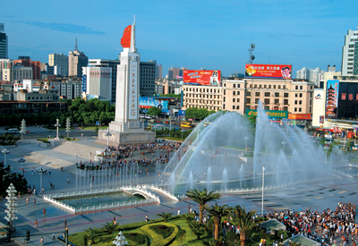
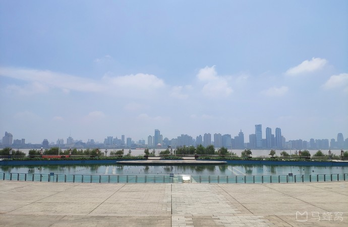
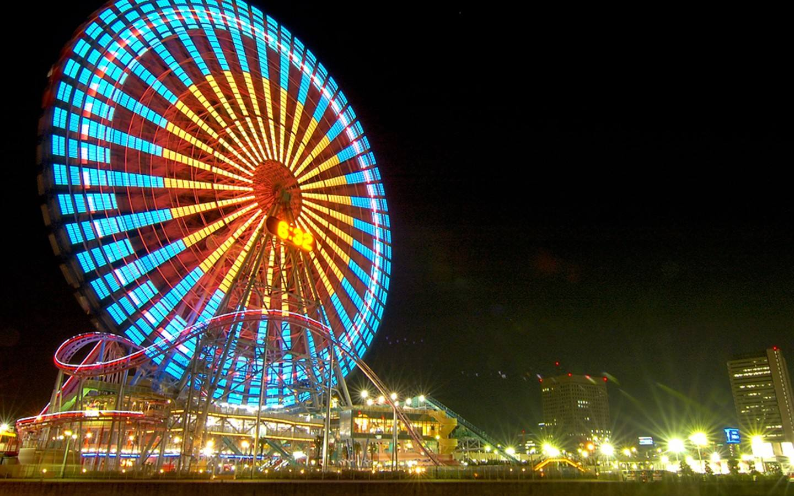
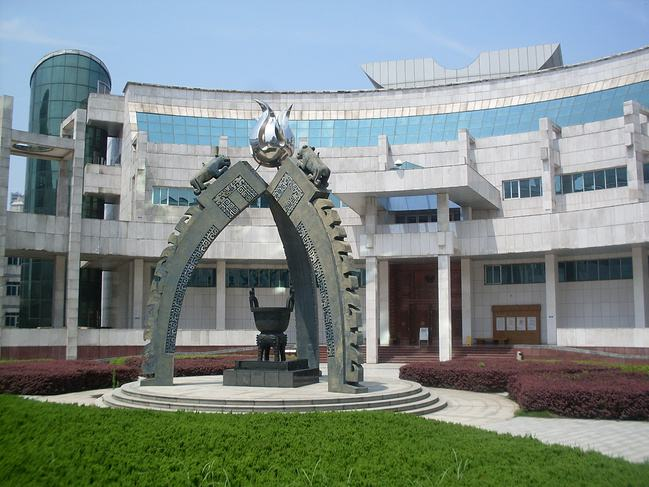
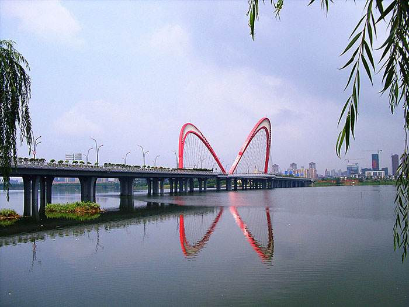

Mon - Sun: 9.00 - 18.00
ncrtxx@163.com
主页
乘客服务
1号线地图
2号线地图
运营时间查询
购票指南
失物招领
禁带物品公告
热门景点
地图查询
热门景点
美食购物
美食推荐
商圈购物
地铁新闻
地铁新闻
地铁视频
发展历史
联系我们
热门景点
主页
热门景点
南昌热门景点
全部景点
红色景点
人文景点
亲子游
5A景区
滕王阁

纪念碑
八一广场

音乐喷泉
秋水广场

世界第三高
南昌之星摩天轮
八一起义
八一起义纪念馆
庙会
绳金塔

博物馆
江西省博物馆

天然湿地
艾溪湖森林公园
南昌后花园
梅岭国家森林公园